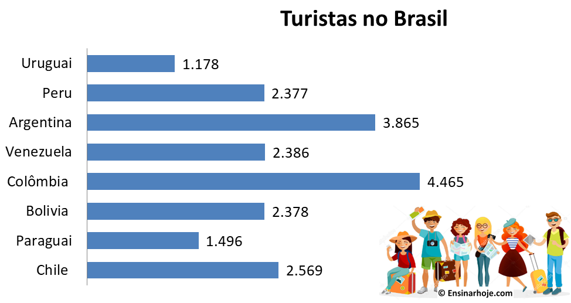
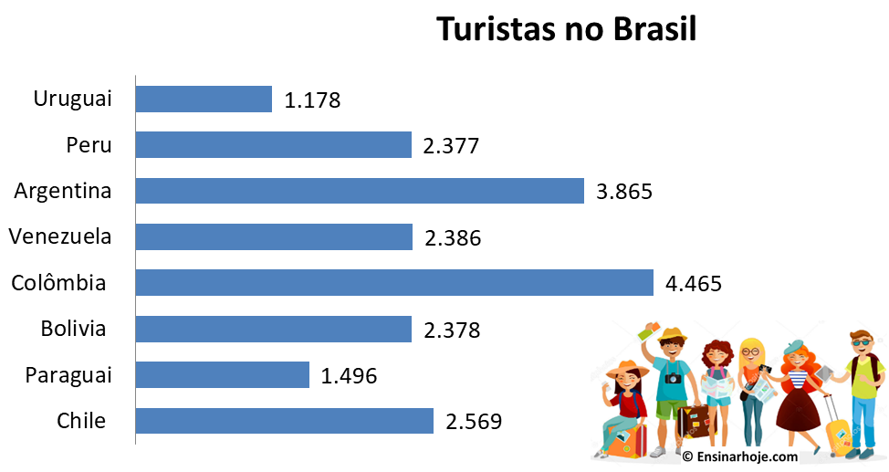

Estatística
Definição e conceitos básicos
Podemos dividir a estística em dois tipos:
- ⤷Descritiva
- A estatística descritiva é quando descrevemos, organizamos e apresentamos os dados por tabelas, gráficos, e medidas.
- ⤷Inferencial
- A estatística inferencial é quando analisamos os dados para podermos tomar as decisões, e quando ela está estruturada e associada aos cálculos de probabilidade. A partir disso, conseguimos tirar conclusões de um conjunto de elementos, apenas se olharmos somente uma parte desse mesmo conjunto.
Por enquanto vamos usar apenas a descritiva, trabalhando com as medidas, tais como média, mediana e moda. Portanto, vamos analisar mais alguns conceitos importantes:
- População
- ⤷A população é definida como um conjunto de elementos em que queremos analisar algumas características. Não precisa ser necessariamente um conjunto de pessoas. Pode ser um conjuto de casas, peças de produção, etc.
- Amostra
- ⤷ A amostra é um subconjunto da população.
Vamos ver uma situação em que usamos a população e outra que usamos a amostra:
- - Uma pesquisa em que vamos envolver toda a população usamos o censo ou recenseamento
- - Uma pesquisa em vamos envolver parte da população usamos a pesquisa por amostragem
Vantagens de usar o censo:
- ⤷ Quando a população é menor
- ⤷ Quando é necessário ter o resultado exato. Nesse caso, usamos o censo demográfico
Vantagens de usar a amostragem:
- ⤷ Economizar tempo
- ⤷ Economizar em questões financeiras, ou seja, dinheiro
- ⤷ Quando a população é muito grande, ou até mesmo infinita
Tabelas de distribuição de frequência
Vamos agora entender como funcionam as tabelas na estatística:
Tabela copiada do site tudogeo.com.br
⇢ O título nesse caso é "Brasil: área plantada com os 5 principais grãos da produção nacional (em mil hectares);
⇢ O cabeçalho é a parte em que está escrito "produto" e todos os anos;
⇢ As linhas são toda a parte restante da tabela, em que estão sendo apresentados os dados;
⇢ E, por fim, temos os rodapé, onde está escrito "Brasil. MAPA. Projeções do agronegócio: 2017/18 a 2017/28. 2018. Adaptado."
! É importante lembrarmos que os dados podem ser colocados em forma de porcentagem ou em dados absolutos, como usamos acima.
Por exemplo, se quisessemos calcular o percentual da área de arroz plantada nos anos de 2006 e 2007 teríamos que somar os dados de todos os anos: 2.967 + 2.427 + 1.981 + 1.517 + 1.006 = 9898.
Após isso, fazemos a divisão 2.967 / 9898 para achar o número decimal da nossa porcentagem, que resulta em aproximadamente 0,3. Multiplicamos esse número por cem e obtemos o resultado: 0,3 * 100 = 30%
Caso tenhamos muitos dados a serem analisados, podemos dimininuir a quantidade de linhas montando classes. Por exemplo, se temos uma tabela com muitas idades, por exemplo dos 20 aos 80 anos, podemos criar classes com as idades para diminuir o tamanho da tabela e facilitar a visualização dos dados. Vamos ver como criar isso para podermos entender melhor como ficaria o resultado final:
- 1) Primeiramente, vamos contar a quantidade de linhas e extrair a raíz quadrada desse valor. Por exemplo, se pensarmos numa tabela que tem as idades dos 20 aos 80 anos, e que cada idade é uma linha, teríamos 60 linhas. Então faríamos √ 60 ≈ 7,7; Após isso, como o nosso valor não é exato, arredondamos. Então teríamos 8 classes.
- 2) Agora, precisamos descobrir a amplitude das nossas classes, ou seja, nesse caso, quantas idades teríamos por classe. Para faer isso, primeiro calculamos a amplitude total, que é a diferença entre a maior e a menor idade. Então calculamos 80 - 20 = 60. Agora, dividimos esse valor (amplitude total) pelo número de classes. Então fazemos o cálculo 60 / 6 = 10, e concluímos que teremos 6 classes com 10 idades em cada uma.
- 3) Para representarmos esses valores na tabela usamos o símbolo |--- . Por exemplo, queremos representar a 1 classe, que vai dos 20 aos 30 anos, então ficaria: 20 |--- 31. Mas por que está 31 ao invés de 30? Quando usamos essa representação, significa que o 20 está incluído na classe, mas o 31 não está. Então, estão incluídos todos os números menores que 31 e maiores ou iguais a 20 (20 < numeros da classe < 31).
Gráficos
Os gráficos são ótimos para visualizar o tamanho dos dados, se cresceram ou diminuíram, e como eles se relaciona com outros valores. Existem vários tipos de gráficos, mas os mais comuns são: em colunas, em barras, em setores, em curvas ou segmentos de reta, e o histograma (usado para representar as classes).
 


Medidas de posição
Vamos estudar três medidas de posição: a média aritmética simples, média aritmética ponderada, a mediana, e a moda. As medidas de posição também podem ser chamadas de tendência central.
- ⤷Média aritmética simples:
O resultado dessa média é obtido através da divisão da soma de todos os números e quantidade de números somados: média = soma dos numeros / quantidade de numeros. Vamos fazer um exemplo:
- Imagine a seguinte situação: você está estudando em uma escola, e quer saber qual vai ser a sua mmédia trimestral na matéria de biologia. Você fez três avaliações durante esse trimestre. Na primeira tirou 9.0, na segunda tirou 10, e na terceira tirou 8. Vamos calcular a média:
- média = 9 + 10 + 8 / 3 → média = 27 / 3 → média = 9
- ⤷Média aritmética ponderada:
Nós usamos essa média quando temos valores que se repetem mais de uma vez e que tem pesos diferentes uns dos outros.
Por exemplo, você está na faculdade e tem 2 trabalhos, com pesos diferenetes, que vão complementar a sua nota. Um vale 4 pontos e o outro vale 6 pontos, e no final vão fechar a nota 10. Para calcular essa média, somamos todas as notas de mesmo peso e multiplicamos por esse peso, e depois fazemos a mesma coisa com as notas do outro peso. Após isso somamos todas essas notas e dividimos pela soma dos pesos.
Média ponderada = (notas x peso) + (notas x peso) / (soma dos pesos)
! Os pesos também podem ser frequências.
Vamos fazer um exemplo:
- Vamos imaginar que você têm 3 avaliações de matemática, cada uma com um peso diferente, e você quer saber a nota final. A primeira avalição tem peso 5, a segunda peso 2, e a terceira peso 3. Na primeira avaliação você obteve nota 4, na segunda nota 2, e na terceira nota 2. Vamos fazer o cálculo:
- Nota final = 5.4 + 2.2 + 3.2 / 5 + 2 + 3 → Nota final = 20 + 4 + 6 / 10 → Nota final = 30 / 10 → Nota final = 3
- ⤷Mediana:
A mediana é a medida que vai dividir a amostra ou a população em duas partes iguais. Primeiramente temos que organizar todos os valores em ordem crescente. Temos dois casos diferentes na mediana:
- Quando temos o número de termos (n) em quantidade ímpar, a mediana vai ser o elemento central, independente se os valores estão em ordem crescente ou decrescente. A fórmula vai ser n + 1 / 2. Vamos fazer um exemplo:
- Temos uma mediana com 21 elementos, ou seja n = 21. Vamos substituir na fórmula → mediana = 21 + 1 / 2 → mediana = 22 / 2 → mediana = 11
- Quando temos o números de termos (n) em quantidade par, usamos a média aritmética dos dois termos do meio, usando n / 2 e (n / 2) + 1. Vamos fazer um exemplo:
- Temos a amostra 2, 6, 5, 9, 18, 12. Agora vamos colocar em ordem crescente → 2, 5, 6, 9, 12, 18. O próximo passo é identificar os meios: n = 6, então n / 2 = 3. Então, os termos do meio são o 3º e o 4º, que são 5 e 9. Agora, calculamos a mediana: Md = (5 + 9) / 2 → Md = 14 / 2 → Md = 7
- Vamos pensar em um exemplo de um caixa eletrônico que deposita um número x de notas por dia:
- Primeiramente, vamos somar a frequência (n): 10 + 20 + 30 + 15 + 40 + 25 = 130. Agora, vamos achar os elementos centrais: 130 / 2 = 65 e (130 / 2) + 1 = 66. Feito isso, podemos observar que o 65 e o 66 estão na classe da nota de dez reais, portanto, a mediana é dez.
- Agora vamos pensar no mesmo exemplo, mas com os dados em classes. É importante lembrarmos que agora não importa se n vai ser ímpar ou par. Para achar a mediana basta olharmos a frequência acumulada dos eventos, que nesse caso é 20. Após isso fazemos a seguinte conta: 20 / 2 = 10 e (20 / 2) + 1 = 11. Após isso, olhamos que esse elemento está na linha 3. Então fazemos 10 + 5 = 15, e concluímos que a mediana vai ser 15.
- ⤷Moda:
É o valor que ocorre com maior frequência em uma série de valores. Exemplo:
- Temos a sequência de valores 4, 5, 7, 4, 9, 10, 4, 7, 3, 4. Logo, notamos que o número que aparece com maior frequência é o 4.
- Se considerarmos o exemplo do caixa eletrônico, vamos notar que a moda é 40, pois é o maior valor de todos na frequência.
Reflexão
Esse conteúdo foi um pouco mais difícil do que o anterior, principalmente na parte de mediana. Entretanto, consegui entender todo o conteúdo. Na parte de mediana, a parte mais difícil foi entender os dados agrupados e os dados agrupados em classes, e nessa parte eu procurei ajuda na Internet no site estrategiaconcursos.com.br. O restante do conteúdo foi mais tranquilo de entender.